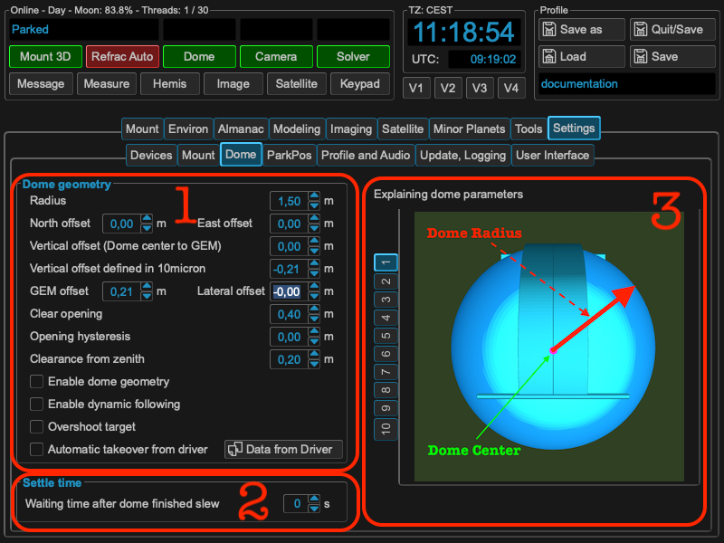
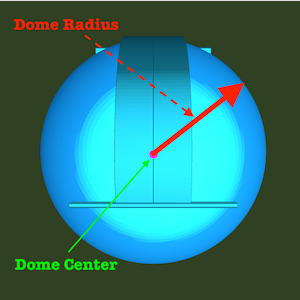
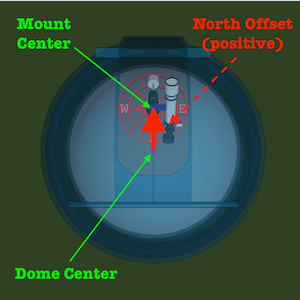
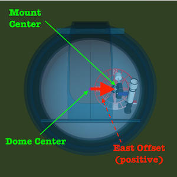
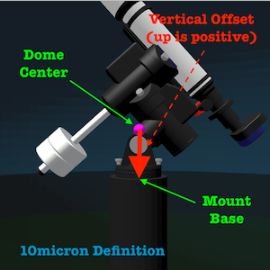
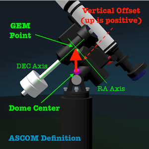
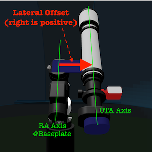

Dome geometry¶
If you using dome, you should set up the parameters to get a good performance of the slew calculations. To use the calculations, please check the “Enable dome geometry offset calculations”. If checked, MountWizzard4 will calculate the correct dome azimuth in relation to the desired target of the mount. It take the pierside already into account, so you could slew mount and dome at the same time.
{kind=link}
Area 1: dome geometry parameters¶
I this section the geometry parameters of the dome and mount in relation to the dome are set. The dome center - the center point of the dome hemisphere - is always the reference point from where the measurements are taken. All measure are in meters. It starts with the radius
followed by the displacement of the mount in north and east direction. A displacement to the north is treated positive as well as a displacement to the east.
 For the vertical displacement you have to take car about different definitions of how to measure this value. A common way many ASCOM drivers do is measuring the distance between the dome center and the GEM point of the mount. The GEM point of the mount is the intersection of the RA and DEC axis. Ideally you will have that point fitting to the dome center. In the 10micron handbook, the measurement is done between the dome center and the base of the mount. This value is mostly negative, because the mount base level is on lower height than the dome center.
 If you have mor than one telescope mounted, you will experience a lateral displacement of the OTA you would like to use for reference. The measurement is taken from mw4.base plate of the mount to the OTA axis. Displacement to the right (east) is treated positive.
Area 2: dome settle time¶
With the dome settle time you define the waiting time from reaching the target azimuth until the dome emits slew finished. This could be used for avoiding mechanical influence on the mount. This settle time in handled in MountWizzard4 only. If you could enter a settle time in your dome driver etc. the times will add up.
Area 3: dome geometry help¶
As geometry parameters are difficult to remember, MountWizzard4 will show you a short explanation picture of the parameter you are currently changing.
Dome dynamic follow¶
For satellite tracking moving the dome adequately is very important. If you have following on your dome controller, you might have set a hysteresis to avoid continuous dome movements. These values normally are between 1 and 3 degrees. MountWizzard4 could handle this different. If you set your dome geometry correctly, you could add parameters for target shutter distance and shutter zenith distance (better terminus ???). With these parameters MountWizzard4 will calculate if the viewing spot of you telescope moves with the next slew command in the “red zone”. If so, the dome azimuth will be corrected and the dome will slew to it’s new centered position. If there is still a reasonable distance, your telescope still could view your target and no dome movement is necessary.
Hint
See also on youtube: https://youtu.be/ZmDz-rtvFzc
Top view of your dome setup: